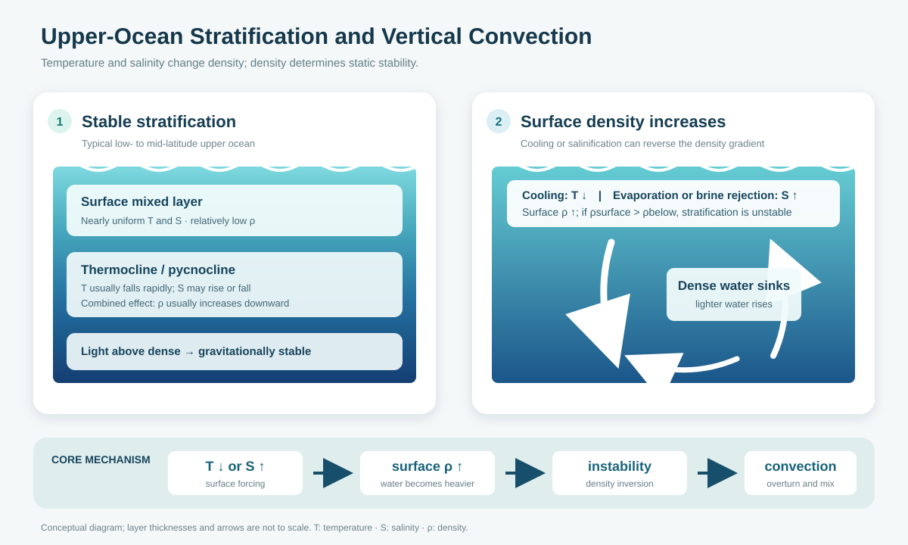
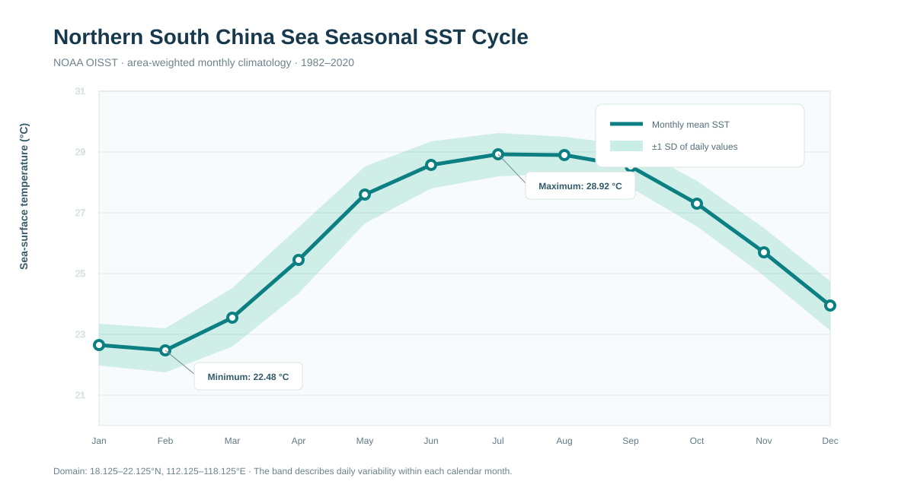

Choose the depth that fits the assignment
Concise answer
Physical oceanography studies the physical state and motion of the ocean. Its main topics include seawater properties, air-sea exchanges of heat and freshwater, waves and tides, wind-driven and thermohaline circulation, turbulence and mixing, and the role of the ocean in climate.
The upper ocean commonly consists of a well-mixed surface layer overlying a thermocline, where temperature decreases rapidly with depth. Salinity may also change through a halocline. Temperature and salinity jointly control seawater density: warming usually lowers density, whereas cooling and increasing salinity raise it. Their combined effect usually produces a pycnocline in which density increases downward. This arrangement is stable because light water lies above dense water.
Surface cooling increases the density of surface water. Evaporation or brine rejection during sea-ice formation can also raise surface salinity and density. If surface water becomes denser than the water below, the density gradient is reversed and the stratification becomes gravitationally unstable. Dense water then sinks while lighter water rises. This overturning causes vertical convection and mixes heat and salt until the density inversion is removed and a stable or nearly uniform mixed layer is restored.
Structured explanation
Main topics in physical oceanography
Physical oceanography explains how the ocean stores and transports heat, freshwater, salt, momentum, and mechanical energy. The field commonly includes:
Seawater properties
Temperature, salinity, pressure, density, and their three-dimensional distributions.
Air-sea interaction
Exchanges of heat, freshwater, gases, and momentum between atmosphere and ocean.
Ocean circulation
Wind-driven gyres, boundary currents, upwelling, eddies, and overturning circulation.
Waves and tides
Surface and internal waves, tidal motion, energy propagation, and dissipation.
Turbulence and mixing
Processes that redistribute heat, salt, momentum, nutrients, and dissolved gases.
Ocean and climate
Water-mass formation, polar and coastal processes, climate modes, and long-term change.
Typical upper-ocean structure
The upper ocean is often divided into a surface mixed layer, a transition zone, and deeper water. Wind stirring, waves, and buoyancy-driven turbulence keep the mixed layer relatively uniform in temperature and salinity. Below it, temperature often falls rapidly through a seasonal or permanent thermocline. Salinity may increase or decrease through a halocline, depending on evaporation, precipitation, rivers, ice processes, and water masses.
Temperature and salinity act together to set density. Under ordinary ocean conditions, lower temperature and higher salinity both make seawater denser. In many low- and mid-latitude regions, the temperature decrease with depth dominates, producing a pycnocline in which density increases downward. Light water above dense water is stable because a vertically displaced parcel experiences a restoring buoyancy force.

Why cooling and salinification cause convection
- 1Stable starting state
Relatively light surface water lies above denser water.
- 2Surface density rises
Cooling contracts the water. Evaporation removes freshwater, and sea-ice formation rejects brine. Each process can raise surface density.
- 3A density inversion may form
If the surface becomes denser than the water immediately below, the original stable ordering is reversed.
- 4Convective overturning begins
Dense surface water sinks and lighter water rises, vertically transporting heat and salt.
- 5Stability is restored
Mixing continues until the inversion disappears, leaving a deeper, nearly uniform mixed layer or density increasing downward again.
Quantitative explanation and data context
Density response
For modest changes at fixed pressure, the seawater equation of state can be linearized as:
Here α is the thermal expansion coefficient and β is the saline contraction coefficient. Both are positive under normal ocean conditions. Therefore cooling, ΔT < 0, gives Δρ > 0; increasing salinity, ΔS > 0, also gives Δρ > 0.
Static stability
For a vertical coordinate z that increases upward, the buoyancy frequency is:
Density decreases upward; displaced parcels feel a restoring force.
Dense water overlies lighter water; convective overturning follows.
In precise analysis, oceanographers use potential density or a related pressure-corrected variable because in-situ density also increases through compression with pressure.
Illustrative numerical check
| Water sample | Temperature | Practical salinity | Density | Interpretation |
|---|---|---|---|---|
| Initial surface | 24 °C | 34.5 | 1023.265 kg m⁻³ | Lighter than 50 m water |
| Illustrative 50 m water | 20 °C | 34.35 | 1024.267 kg m⁻³ | Initially below lighter water |
| Cooled surface | 20 °C | 34.5 | 1024.382 kg m⁻³ | Denser than 50 m water |
| Salinified surface | 24 °C | 36.0 | 1024.400 kg m⁻³ | Denser than 50 m water |
Local NOAA OISST context
The available local dataset is a northern South China Sea subset of NOAA OISST for 1982–2020. It contains daily sea-surface temperature on a 5 × 7 grid. The monthly climatology below uses cosine-of-latitude area weights and valid observations without filling the missing 2.86% of grid-time entries.

What it cannot show: OISST has no salinity profile or subsurface temperature. It cannot by itself demonstrate that convection occurred. That requires vertical temperature and salinity profiles to calculate potential density, mixed-layer depth, and N².
Integrated course answer
Physical oceanography examines the physical properties and motion of the ocean and the processes that control them. Its main subjects include temperature, salinity and density; air-sea exchanges of heat, freshwater and momentum; waves and tides; wind-driven and density-driven circulation; eddies, turbulence and mixing; and the ocean's role in climate.
The upper ocean commonly contains a surface mixed layer in which wind and waves keep temperature and salinity nearly uniform. Beneath it lies a transition zone that often includes a thermocline, where temperature decreases rapidly with depth, and sometimes a halocline, where salinity changes rapidly. Temperature and salinity together determine density. Cooling generally increases seawater density, and increasing salinity also increases density. Their combined effect usually creates a pycnocline with density increasing downward. Light water over dense water is gravitationally stable because a displaced parcel experiences a restoring buoyancy force.
Surface cooling can erode this stability. As the surface loses heat, its density rises. Surface salinity can increase through evaporation or brine rejection when sea ice forms, which also increases density. If the surface remains lighter than the water below, the water column stays stable, although the mixed layer may deepen. If the surface becomes denser than the underlying water, a density inversion forms. Dense surface water sinks and lighter water rises, causing vertical convection. This overturning transports heat and salt vertically and continues until the unstable density gradient is removed. The final state is usually a deeper, more uniform mixed layer with density that is constant or increases with depth.
The key point is that convection responds to density rather than to temperature or salinity separately. Cooling and salinification favor convection because both make surface water denser, whereas rainfall, river discharge, or ice melt can lower surface salinity and stabilize the water column. A complete assessment therefore requires both temperature and salinity profiles and should use potential density to remove the direct compression effect of pressure.
Self-check
- Question coverageMain topics, upper-ocean layers, T–S–density relations, and convection are all addressed.
- Direction of effectsCooling increases density; salinification increases density; stable density usually increases downward.
- Stability signWith z positive upward, stable stratification has dρ/dz < 0 and N² > 0; an inversion has N² < 0.
- Pressure caveatPotential density is distinguished from raw in-situ density.
- Regional caveatThe thermocline-dominated profile is presented as typical of many low- and mid-latitude regions, not universal.
- Data limitationOISST is used for surface-temperature context, not as evidence of observed convection.
- Numerical checkBoth illustrative surface perturbations produce water denser than the selected underlying layer.
References
- Fofonoff, N. P., & Millard, R. C. (1983). Algorithms for Computation of Fundamental Properties of Seawater. UNESCO Technical Papers in Marine Science, No. 44. DOI ↗
- Huang, B., et al. (2020). NOAA 0.25-degree Daily Optimum Interpolation Sea Surface Temperature (OISST), Version 2.1. NOAA NCEI. DOI ↗
- Talley, L. D., Pickard, G. L., Emery, W. J., & Swift, J. H. (2011). Descriptive Physical Oceanography: An Introduction (6th ed.). Academic Press.